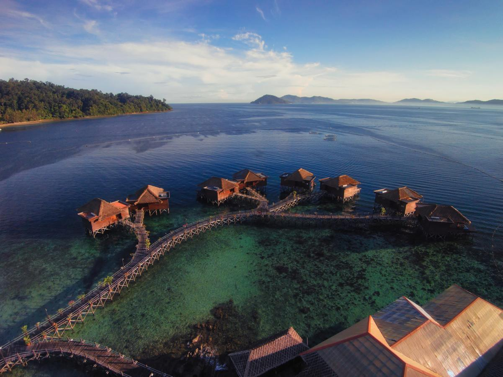

Malaysia’s islands are broadly divided by coast, offering diverse experiences from pristine diving to luxury escapes. The ideal time to visit the East Coast (Perhentian, Redang, Tioman) is during the dry season from May to September, while the West Coast (Langkawi, Penang) peaks from December to February. The best time to visit Borneo is between March and October.
